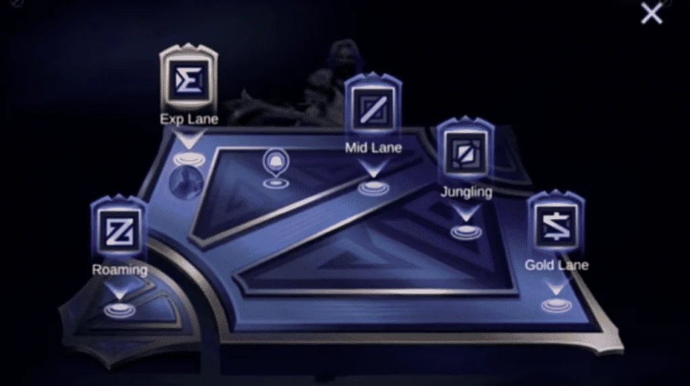

Laning and Gameplay
I played Mobile Legends a lot last summer and peaked at Mythical Immortal with 106 stars (highest rank title). Here are some tips based on my experience.

Early Game
The early game is one of the most important phases of a match. An early lead can make the rest of the game easier and sometimes decide the outcome. The first Turtle spawns at about 2 minutes, near the EXP Lane. The jungler should full clear their jungle camps and get level 4. EXP, Mid, and Roam should also prepare to help at Turtle. Gold Lane is normally far away (on the other side of the map), so the Gold Laner often stays at their lane to farm instead.
Wave management is especially useful in Gold Lane because it forces the enemy gold laner to walk up if you freeze the lane (if they don't, they will lose gold and EXP) and provides more ganking opportunities. Mobile Legends is a very fast-paced game compared to League of Legends. So, the exp and mid laner benefit less from wave management. So, more often than not, they tend to fast clear or cut their minion wave and rotate to other lanes to earn more gold and join team fights.
Mid Game
By mid game, try to have taken at least one enemy turret, and ideally have pressure in several lanes. Taking turrets opens up the map, making it easier to rotate and catch enemies. You can then look for chances to take Lord.
Late Game
Lord helps your minions push toward the enemy base. The first Lord will not always end the match, but later Lords are stronger. Try to push with Lord instead of fighting randomly, because destroying the enemy base is still the goal.
Gameplay Phase Selector
Your gameplay tip will appear here.
Gameplay Questions
- When does the first Turtle spawn?
- Which roles usually help at the first Turtle?
- Why should you take turrets in the mid game?
Questions and Answers
| Question | Answer |
|---|---|
| When does the first Turtle spawn? | About 2 minutes into the match. |
| Which roles usually help at the first Turtle? | Jungle, EXP, Mid, and Roam. |
| Why should you take turrets in the mid game? | To open the map and gain space. |